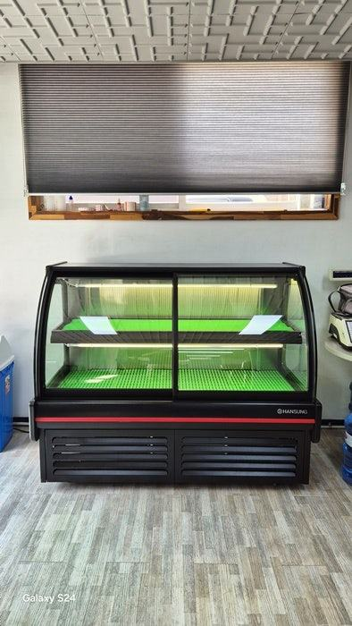

정육쇼케이스
정육쇼케이스 소음, 소리 종류별로 원인 찾는 법

정육쇼케이스에서 나는 소리는 대부분 바닥 수평, 주변 물건과의 접촉, 기계실 먼지처럼 사장님이 직접 고칠 수 있는 원인에서 시작됩니다. 다만 콤프레셔가 평소보다 크게 울리면서 냉기까지 약해진다면 바로 점검을 받으셔야 고기 손실을 막을 수 있습니다.
안녕하세요. 정육점과 고깃집 진열장을 자체 공장에서 만드는 한성쇼케이스입니다.
정육점은 하루 종일 쇼케이스 바로 앞에서 고기를 썰고 손님을 맞는 곳이라, 기계 소리가 조금만 커져도 금방 신경이 쓰이시죠.
손님이 "냉장고 소리가 크네요" 한마디 하시면 혹시 고장인가 싶어 불안해지기도 합니다.
쇼케이스는 콤프레셔와 팬이 쉬지 않고 돌아가는 장비라 어느 정도 소리는 정상입니다. 중요한 건 평소와 다른 소리를 알아채고, 그 소리가 어디서 나는지 구분하는 것입니다.
오늘은 소리 종류별로 의심할 원인과 직접 확인하는 방법을 정리해 드리겠습니다.
1. 웅웅거림이 커졌을 때
콤프레셔가 돌아가는 웅웅 소리는 원래 나는 소리입니다. 그런데 예전보다 커졌다면 먼저 기계실 앞 통풍구를 보세요.
정육점은 고기 손질 중 생기는 기름기와 먼지가 응축기에 달라붙기 쉽고, 이것이 쌓이면 열을 빼지 못해 콤프레셔가 더 오래, 더 세게 돌아갑니다.
여름철 매장 온도가 높을 때도 같은 현상이 생깁니다. 통풍구 청소 후에도 소리가 계속 크고 설정 온도까지 잘 내려가지 않는다면 점검을 받아 보셔야 합니다.
- 기계실 통풍구 먼지와 기름때를 확인하세요.
- 기계실 앞에 박스나 짐이 쌓여 있지 않은지 보세요.
2. 덜컹거리거나 떨리는 소리
덜컹거림이나 진동 소리는 기계 고장보다 설치 상태 문제인 경우가 많습니다. 바닥 수평이 맞지 않으면 콤프레셔가 켜질 때마다 본체가 미세하게 흔들리고, 옆 작업대나 벽에 닿아 소리가 커집니다.
정육점은 바닥 물청소를 자주 해서 조절 다리가 조금씩 틀어지기도 합니다. 본체를 손으로 눌러 흔들림이 있는지 보고, 벽이나 저울 받침대와 닿아 있는 부분이 없는지 확인해 보세요.
새로 설치한 지 얼마 안 된 제품에서 진동이 느껴진다면 운반 과정에서 배관 고정이 느슨해졌을 수도 있습니다.
이런 경우 사장님이 기계실을 직접 열기보다 설치 기사님께 바로 연락해 확인받으시는 편이 안전합니다.
- 본체가 바닥에서 흔들리지 않는지 눌러 보세요.
- 작업대·벽과 본체 사이에 틈이 있는지 보세요.
- 기계실 안 배관에 손이 닿지 않게 주의하세요.


3. 팬에서 나는 긁히는 소리
내부에서 사각거리거나 긁히는 소리가 난다면 냉기를 돌리는 팬 쪽을 의심해 볼 수 있습니다. 성에가 쌓여 팬 날개에 닿거나, 고기 포장 비닐 조각이 흡입구에 끼면 이런 소리가 납니다.
고기를 칸 끝까지 밀어 넣어 송풍구를 막는 것도 원인이 됩니다. 송풍구 앞을 비워 두고, 그래도 소리가 계속되면 전원을 끈 상태에서 점검을 요청하세요.
4. 딸깍·물 흐르는 소리는 대개 정상입니다
콤프레셔가 켜지고 꺼질 때 나는 딸깍 소리, 제상할 때 물이 흐르거나 똑똑 떨어지는 소리는 정상 작동 과정에서 납니다.
다만 딸깍 소리가 아주 짧은 간격으로 반복된다면 콤프레셔가 제대로 돌지 못하고 있다는 신호일 수 있습니다.
소리가 이상하다고 느끼시면 언제부터, 어떤 시간대에, 어떤 소리가 나는지 휴대폰으로 녹음해 두세요. 접수할 때 들려주시면 원인을 훨씬 빨리 찾을 수 있습니다.
냉기 순환 팬이 멈추면 오히려 소리가 줄어드는데, 이때 고기 표면 색이 금세 변하기 시작합니다. 소리가 갑자기 조용해졌을 때도 내부 온도를 한 번 확인해 보세요.
체크리스트
- 기계실 통풍구 청소 상태
- 바닥 수평과 조절 다리
- 벽·작업대와 본체 접촉 여부
- 송풍구 앞 고기·비닐 막힘
- 이상 소리 녹음해 두기
현장에서 자주 보는 경우: 기성품을 억지로 맞춰 넣은 정육점
정육점은 매장마다 내부 구조가 달라 기성 쇼케이스가 딱 맞지 않는 경우가 많습니다. 자리에 맞지 않는 제품을 억지로 넣으면 벽이나 작업대에 바짝 붙게 되고, 통풍 공간이 부족해 기계 소리와 열이 커지기 쉽습니다.
저희는 정육쇼케이스를 자체 공장에서 매장 모양을 그대로 반영해 맞춤 제작합니다. 사장님 동선과 설치 자리에 맞춘 크기로 만들고, 사용 중 이상이 생기면 장사에 지장이 없도록 빠르게 처리하는 A/S 체계로 운영하고 있습니다.



자주 묻는 질문
정육쇼케이스 소리가 밤에 더 크게 들려요. 고장인가요?
매장이 조용해져 상대적으로 크게 들리는 경우가 많습니다. 낮과 밤의 소리 크기가 실제로 다르고 냉기까지 약해졌다면 점검을 받아 보세요.
소음을 줄이려면 어떻게 관리해야 하나요?
기계실 통풍구를 정기적으로 청소하고, 바닥 수평을 맞추며, 본체가 벽이나 작업대에 닿지 않게 두는 것이 기본입니다.
송풍구 앞을 막지 않는 진열 습관도 도움이 됩니다.
새로 맞출 때 소음을 고려해 설계할 수 있나요?
카운터와 기계실 위치, 배기 방향을 매장 구조에 맞춰 정할 수 있습니다. 손님 응대 자리와 기계실을 떨어뜨리는 배치도 상담 때 함께 검토해 드립니다.
매장 조건에 맞춰 만드는 한성쇼케이스
원하시는 제품 사진과 설치할 공간 사진만 보내 주셔도 매장에 맞는 구성을 추천해 드립니다.
- 전국 240여 개 A/S 전담 센터 운영
- 본사 대량 자재 매입으로 품질 대비 합리적인 가격
- 유럽제·삼성 냉각 콤프레셔 적용
- 국내 최초 쇼케이스 전문 디자이너 상주
매장 폭과 원하는 진열 구성을 알려 주세요. 실측과 견적을 안내해 드립니다.
031-986-2458